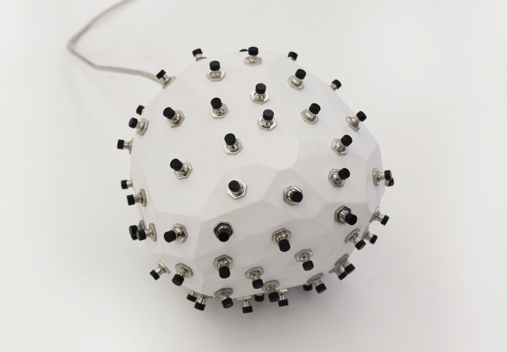

White58
2016
White58 is a white polyhedron controller that intends to develop a personal relationship with the player - teaching new mechanisms as the game level goes up, and meanwhile adjusting itself for the player’s habits. In the shape of an artificial rock, White58 has 81 small identical buttons embedded on 58 different polygonal faces. The controller itself is like a puzzle, so the game screen is kept minimal. In the first level, only one button is required to control the square to walk to the door on its right. The first button is randomly assigned each time the game restarts, so it requires a little bruteforce to get started. But it’s not all about frustration to find the right button. After first level, each new level introduces a new function, such as moving to different directions, collecting tools, and interacting with allies and enemies. Each function is controlled by a new button, locating on one of the ADJACENT sides of the previous button. The player will not know what the new function is in each level until finding the right button. As the level goes up, more and more buttons are activated, and the controller becomes a hand twister. However, some functions are less useful than the others for the player’s strategy, or the player simply forgets about them. If a function is not used in 3 levels consecutively, it will disappear and its corresponding button will be canceled. Eventually the control of White58 becomes unique for every different player.
